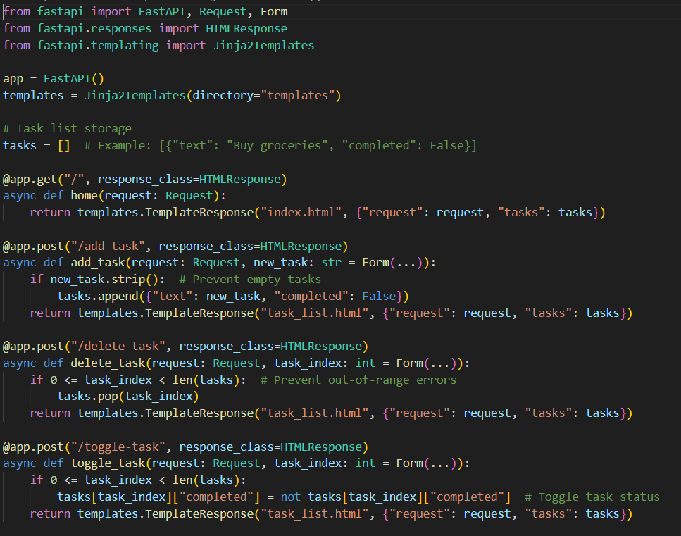
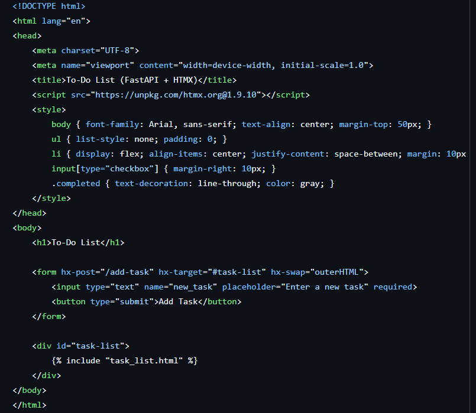
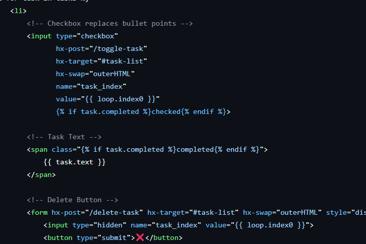

Lavanya Gupta - 24110184
Shailja Paliwal - 24110328
Wani Shreya Jagesh - 24110396
In modern web development, creating lightweight, interactive applications with minimal JavaScript has become a sought-after approach. FastAPI, a high-performance web framework for Python, is well-suited for building efficient backend systems, while HTMX offers a simple way to introduce frontend interactivity without relying on heavy JavaScript frameworks like React or Vue.
This article will walk you through building an interactive To-Do List application using FastAPI for the backend and HTMX for the frontend. The application will allow users to add, complete, and delete tasks dynamically, without requiring full-page reloads.
By leveraging HTMX, we can achieve a smooth user experience with minimal frontend complexity.
# Install dependencies
pip install fastapi uvicorn
# Run the FastAPI server
uvicorn main:app --reload
1. Dynamic Task Management
Users can add, complete, and delete tasks dynamically without needing a full-page reload. This enhances user experience by making interactions smoother and faster.
2. No Full-Page Reloads
HTMX enables partial page updates, meaning only the required elementson the page change instead of reloading the entire document. This is achieved through HTML attributes instead of JavaScript functions.
3. Persistent Storage
We used SQLite with SQLAlchemy to ensure that tasks remain available even after refreshing the page or restarting the server.
4. Minimal Frontend Code
Instead of writing extensive JavaScript for interactivity, HTMX allows us to send simple HTTP requests and dynamically update parts of the page. This results in cleaner, maintainable code.
5. Server-Rendered HTML Updates
The backend sends back HTML fragments rather than JSON responses. These HTML fragments are then inserted into the DOM by HTMX, reducing the need for additional frontend logic.
from fastapi import FastAPI
app = FastAPI()
tasks = []
@app.get("/tasks")
def get_tasks():
return tasks

<button hx-get="/tasks" hx-target="#task-list">Load Tasks</button>
<div id="task-list"></div>


1. Personal Productivity
Manage daily tasks efficiently with a simple to-do list that can be accessed from any device.
2. Office Task Management
Employees can maintain task lists for ongoing projects, ensuring better workflow and team coordination.
3. Shopping Lists
Create and manage shopping lists dynamically without needing to reload the page.
4. Student Assignments tracker
Students can track their assignments, mark completed ones, and stay on top of deadlines.
5. Minimalist CRUD Apps
Use this approach as a lightweight alternative to complex JavaScript-driven CRUD applications.
This FastAPI + HTMX To-Do List demonstrates how backend-driven interactivity can simplify frontend developement. Unlike traditional JavaScript-heavy frameworks, HTMX leverages the power of HTML and HTTP to create highly interactive applications without excessive Javascript.